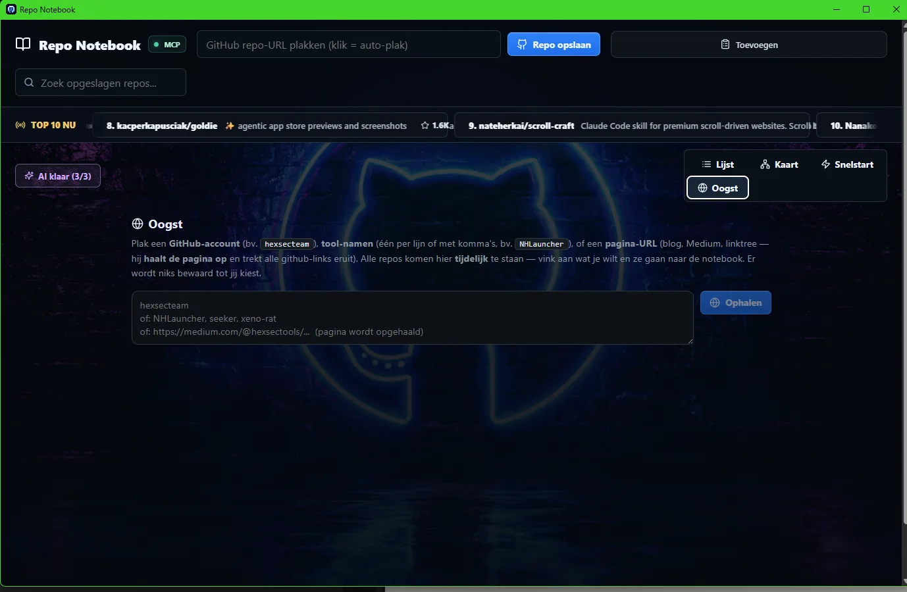
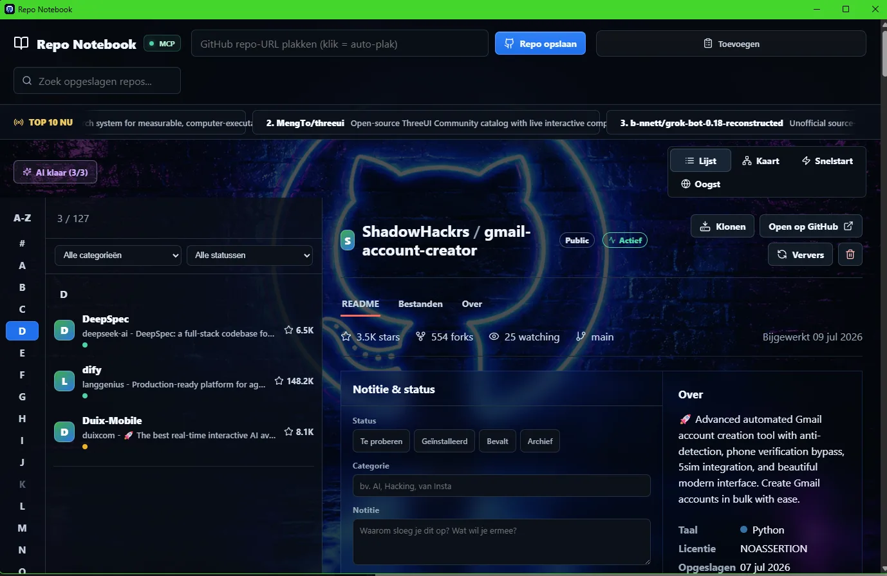

ELECTRON · LOKALE AI · KENNIS
Repo Notebook
Een visuele kennisomgeving die GitHub-repositories verzamelt, analyseert en als verbonden informatie presenteert — met Oogst, lokale AI en slimme suggesties.
RESULTAAT
127 repositories beheerd en gecategoriseerd door lokale AI — geen cloud-API, geen abonnement.


01 HET PROBLEEM
Wie veel met open source werkt, verzamelt honderden repositories: in browsertabs, sterretjes, notities en losse mapjes. Daar gaat kennis verloren. Waarom sloeg je iets op? Werkt het nog? Wat hangt ermee samen?
02 WAT HET DOET
- Verzamelen zonder wrijving
- Plak een repo-URL en hij wordt opgeslagen met README, sterren, forks, taal en licentie. Zoeken, filteren op categorie en status, en een A–Z-index voor grote verzamelingen.
- Oogst
- Plak een GitHub-account, een lijst toolnamen of een pagina-URL (blog, Medium, linktree). Oogst haalt de pagina op, trekt alle GitHub-links eruit en laat je kiezen wat naar de notebook gaat. Niets wordt bewaard tot jij het aanvinkt.
- Lokale AI
- Categorieën, samenvattingen en suggesties komen van een lokaal draaiend taalmodel. Geen data naar de cloud, geen API-kosten, werkt ook offline.
- Notities & status
- Per repo een eigen notitie (‘waarom sloeg je dit op?’) en een status: te proberen, geïnstalleerd, bevalt, archief. Zo blijft de verzameling levend in plaats van een kerkhof.
- Kaart & Snelstart
- Repositories als verbonden kaart bekijken, en met één klik klonen of openen op GitHub.
- MCP-koppeling
- Via het Model Context Protocol kunnen AI-assistenten rechtstreeks in de notebook zoeken en lezen — de basis voor de Obsidian-plugin.
03 WAT IK ERVAN LEERDE
Lokale AI is snel genoeg voor dit soort werk als je de taken klein houdt: categoriseren, samenvatten, suggereren. De grootste winst zat niet in het model, maar in de workflow eromheen — Oogst en de statusknoppen maakten het verschil tussen ‘handig’ en ‘dagelijks gebruiken’.
INTERESSE?
Laten we praten.
Vertel me wat je ervan vindt — of wat je ermee zou willen doen.